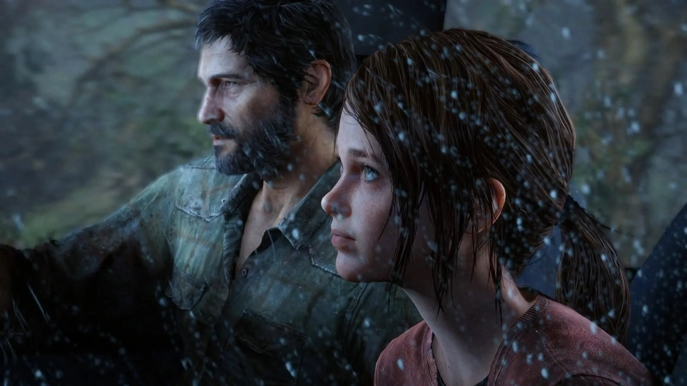

The Last of Us es un videojuego de terror, acción y aventura desarrollado por la compañía estadounidense Naughty Dog y distribuido por Sony Computer Entertainment para la consola PlayStation 3 en 2013. La trama describe las vivencias de Joel y Ellie, un par de supervivientes de una pandemia en Estados Unidos que provoca la mutación de los seres humanos en criaturas caníbales.

